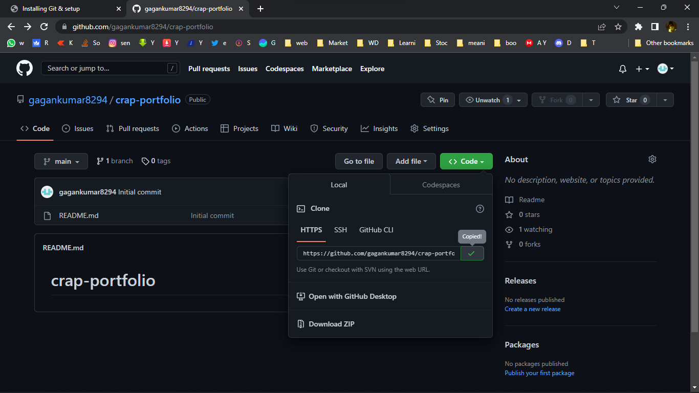

1. open Command Line

1. cd ..
2. ls
3. mkdir filename
touch filename
rm filename
code .
rmdir folder
Step: 1
after git-init
create a filename index.html
you can see that is in Green color, that mean
That is a new file, something new it is indicating
gittwo folder
it is in green
we we're just in modified area
green represents waiting for commit
which files have changed & which files are in stagging area
untracked files[not stagged] are in red color
u can see after git add | git satus
new file in green color
so, that mean you are ready to commit the files that you added
so some times you add files to the stagging area BY MISTAKE
if we want to remove those from stagging area
it will add every single modified to the stagging area
1. extra layer of security
it will allows us to review changes in satging , before commit
ex:- i solved 2 bugs , to represent seperately
we commit it two times,,it allws us to split-up the work at this point
seperate-differet changes for seperate different commits
use git commit & with a flag message "for feature reference"
u can see the ID of the commit
2 files and number of lines of code added,insertion is displayed
use git log --oneline to display in short lines

you can see h1 & p tag in index.html disappeared inside bosy tag
going back in time and seeing what are all the things how it looks at that commit
it basically detatch the changes from these,
to attach again ,
you will get back to current files
now you can see h1 & p tags are appeared on the index.html body
now wjht we did is , we removed that file
and when you typegit log --oneline
you can see that file still exist
we just not considering that file to our project
basically that option is to undone the feature of that commit , what we added
still we have access to that in the history, but we just reverted
GO back intime, take that code into this point intime ,
and just work from there again
Now i can see only last 2 updates in log
last two updates are removed
but all commit are added in one
or in other words just commits{changes of single updated} removed
But progress what is exist upto the point is available
if we want to rewind in time
in styles the css lines are removed
Rather than directly updating it on main branch
changing branch and Creating branch
To create branchgit branch feture-1
we can see that file is disapearing
while changing branch from feature to master
Cuz we we're doing changes in featurre-1 branch, it is isolated
he master branch has no relation with that
to create & checkout only one command
git checkout -b feature-b
now we can see we we're working in different branches
Main MASTER BRANCH is not affected[updated]
untill we merge branches
merging, frature-a & feature-b to the master branch
create a Repo in github
copy HTTPS code
open terminal
Navigate to project folder[gitone]
make sure all changes to be commited and merged to master
go to master branch
git push "url you copied"master
master is for where you are going to push, i.e. master branch
push code successfull
after commit all the changes
insted we setup a Aliesin this repo, what URL gonnabe
finally commits
Oe way of doing push
cuz, creating from scratch, ot existing anything on my computer
to sync , when i clone it and download , it will download this READ.mefile as well
so everything is gonna be in sync
type this code
cloned successfull
for Previous method we used alies to push
just type git push